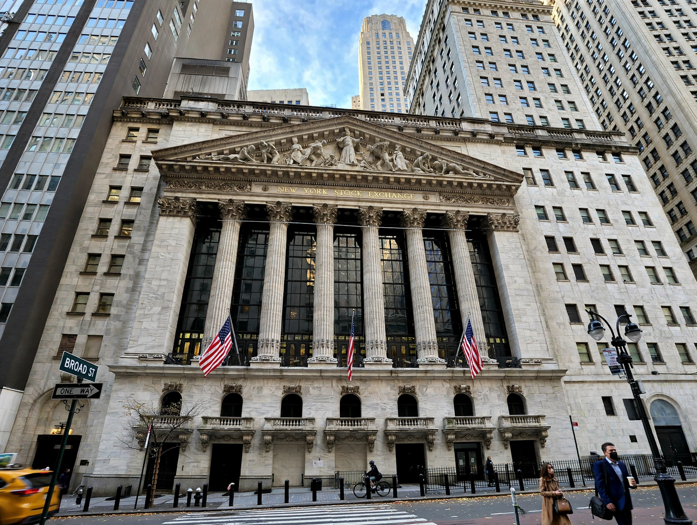

New York Stock Exchange
| New York Stock Exchange | |
|---|---|
| Type | Stock exchange |
| Location | 11 Wall Street, New York City |
| Founded | 1792 (Buttonwood Agreement); organised 1817 |
| Owner | Intercontinental Exchange |
| Key index | Dow Jones Industrial Average; S&P 500 |

[Image: the neoclassical facade of the New York Stock Exchange building on Broad Street]The New York Stock Exchange (NYSE) is an American stock exchange in New York City — 'the Big Board' — the world's largest by market capitalisation of its listed companies, on the order of tens of trillions of dollars. It traces its origin to the Buttonwood Agreement of 1792, was formally organised in 1817, and since 2013 has been owned by Intercontinental Exchange.
Trading and listings
From its landmark building at 11 Wall Street (opened 1903), the NYSE combines a physical trading floor — with designated market makers responsible for orderly trading in each stock — with electronic systems, a hybrid model unusual among modern exchanges. Roughly 2,300 companies are listed, including most of the Dow Jones Industrial Average constituents, under listing standards stricter than its great rival Nasdaq. The opening and closing bells, rung by guests at 9:30 a.m. and 4:00 p.m. Eastern, are fixtures of financial media; the exchange's history includes the crashes of 1929, 1987 and 2020 and the flash events of the electronic era. It is regulated as a national securities exchange by the SEC.